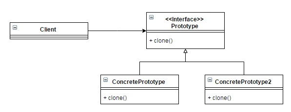

Prototype Pattern by Juicyroach
Posted on JUL 04, 2015 at 10:00 AM

● 目地 : 複製現有物件做修改後使用
● 使用時機 : 當一物件複雜(屬性眾多)，但只需小修改生成新物件時
● 想法 : 有時複製物件後修改會遠比重新升成物件來得簡單得多，因此若物件能有個clone方式，複製自己升成新物件是個好方法。
● UML :
● 程式與解說 :
為了達到想法，我們可以做一個統一個interface並且開放一個clone的方法供外部使用，所有會使用到複製功能的物件都必須實作此介面
public interface Prototype {
public Object clone();
}
而實作介面的物件，必須自己複製所有的數型，若屬性不是原生資料型態(primitive type)而是物件時，必須考慮要做深層拷貝(deep clone)或淺層拷貝(shallow clone)
public class Pizza implements Prototype {
private String dough;
private String topping;
public void setDough(String dough) {
this.dough = dough;
}
public void setTopping(String topping) {
this.topping = topping;
}
public String getDough() {
return this.dough;
}
public String getTopping() {
return this.topping;
}
@Override
public Object clone() {
Pizza pizza = new Pizza();
pizza.setDough(this.dough);
pizza.setTopping(this.topping);
return pizza;
}
}
外部使用時，除了可以對原物件使用clone，更好的方式應該是拿到介面做clone。
public class Client {
public static void main(String[] args) {
Pizza pizza1 = new Pizza();
pizza1.setDough("dough1");
pizza1.setTopping("topping1");
Prototype prototype = (Prototype) pizza1;
Pizza pizza2 = (Pizza) prototype.clone();
System.out.println(pizza2.getDough());
}
}
其實java早就有Cloneable介面，看了一些文件都是建議不要直接使用Object.clone。實作Cloneable介面後自己Override clone method寫clone的方法。
public class Pizza implements Cloneable {
private String dough;
private String topping;
public void setDough(String dough) {
this.dough = dough;
}
public void setTopping(String topping) {
this.topping = topping;
}
public String getDough() {
return this.dough;
}
public String getTopping() {
return this.topping;
}
@Override
public Object clone() throws CloneNotSupportedException {
Pizza pizza = (Pizza) super.clone();
return pizza;
}
}
P.S Object.clone是做淺層拷貝，無法拷貝(或屬性有物件時)時會拋出CloneNotSupportedException的錯誤